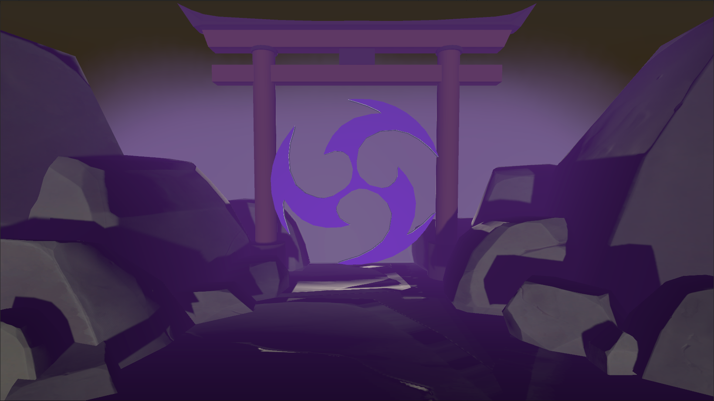

Overview
Created in Unity using audio-reactive elements and frequency-analyzing C# code, Thunderings of the Merciless acts as a Genshin Impact-inspired visual display. Rocks, boulders, a temple gate, a rotating sigil, and even lightning all react to different frequencies from the song. This project was developed to highlight distinct stages of plot: exposition, rising action, climax, falling action, and conclusion. Follow each stage of the song and watch as the scene changes to match the music's intensity and stoyline.


Click image to view gallery